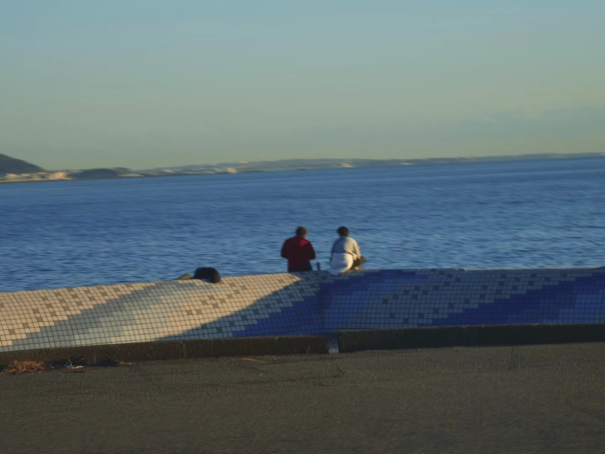

Multimodal AI for Healthcare
I am interested in multimodal learning methods for medical and healthcare applications.
Incoming MPhil · Artificial Intelligence · 2026–2028
Incoming MPhil Student in Artificial Intelligence

01
Hi, I am Zhilin OU (欧芝麟). I recently graduated from Dalian University of Technology with a bachelor’s degree in Digital Media Technology through a joint program with Ritsumeikan University. In Fall 2026, I will join the School of Artificial Intelligence at The Chinese University of Hong Kong, Shenzhen as an MPhil student, advised by Prof. Wenjing Ma.
My research interests include multimodal machine learning, AI for medicine and healthcare, AI for omics, computer vision, embodied intelligence, and 3D.
02
Research areas I am currently interested in exploring.
I am interested in multimodal learning methods for medical and healthcare applications.
I am interested in machine learning for omics data and biomedical discovery.
I am interested in embodied intelligence, 3D, and interactive environments.
03
A timeline of academic training and research collaborations.
Incoming · Fall 2026
Master of Philosophy (MPhil) in Artificial Intelligence
Advisor: Prof. Wenjing Ma
Completed
Bachelor’s Degree in Digital Media Technology
Joint program with Ritsumeikan University
Undergraduate research with the SSDUT-AI4SE Lab, advised by Prof. Zhihui Wang
Research Intern
Research Collaborator
Project advised by Dr. Mengyao Li and Zheng Zhang
Project: 2.5D Animation and AI-generated 3D Animation Cognition Study
04
Future Lab, Tsinghua University
05
06
A quieter way of studying light, place, and small gestures.